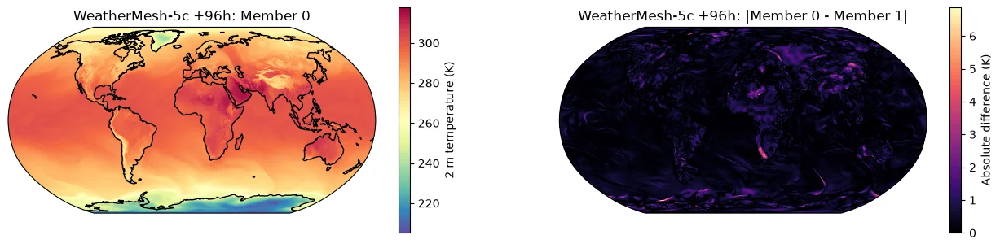

AIDA and WeatherMesh-5c¶
Observation-initialized global ensemble forecasts with WindBorne's AIDA data assimilation and WeatherMesh-5c forecast models.
AIDA is WindBorne's AI data assimilation model: starting from an IFS ensemble background, it applies a sequence of three-hourly updates using public satellite and conventional observations to produce an analysis. WeatherMesh-5c then forecasts forward from that analysis, returning global surface and pressure-level fields every three hours.
In this example you will learn:
- How AIDA and WeatherMesh-5c fit together in time.
- How to run the combined model with
[
CoupledRunner][earth2studio.coupling.CoupledRunner] and [Pipeline][earth2studio.run.Pipeline]. - How to map four forecast members to two IFS backgrounds and fork each pair.
- How to write Zarr output and plot a forecast and the difference between two branches.
The two models can also be used on their own:
AIDA returns just the analysis, and
WeatherMesh5C forecasts directly from
IFS fields without assimilation. The combined
AIDAWeatherMesh5C run through
CoupledRunner, as shown here, is the recommended way to produce
observation-initialized forecasts.
This is a reduced demonstration: two IFS backgrounds, two branches per
background, and 2 m temperature through +96h. To scale up toward the
operational setup (24 backgrounds, eight branches each forked at +72h, and
forecasts through +360h), increase members, the source_member mapping,
final_lead_time and the variables selection below. WindBorne's standalone
wm5c-run
is a useful reference for that configuration. Both paths use public input
sources, not identical production inputs.
Use a CUDA GPU with 40 GB of memory recommended. Model assets total 3.54 GB; allow several additional GB for the public inputs and about 1 GB for Zarr output. Budget roughly 10 minutes with warm caches on a datacenter GPU; a first run also downloads inputs, so time depends on network and cache speed.
Set Up¶
- Model:
AIDAWeatherMesh5C. - Background:
IFS_ENSandOISST. - Observations:
NNJAObsConv,NNJAObsSat, andNNJAObsSatwnd. - Workflow: [
CoupledRunner][earth2studio.coupling.CoupledRunner], [Pipeline][earth2studio.run.Pipeline], andZarrBackend.
import os
import cartopy.crs as ccrs
import matplotlib.pyplot as plt
import numpy as np
from dotenv import load_dotenv
from earth2studio.coupling import CoupledRunner
from earth2studio.io import ZarrBackend
from earth2studio.models.da import AIDAWeatherMesh5C
from earth2studio.run import Pipeline, work_items
load_dotenv()
os.makedirs("outputs", exist_ok=True)
Load the Model¶
The work item time is the analysis time, here 09 UTC on 21 September 2026. The timeline is:
- 00 UTC: the IFS ensemble background is valid (nine hours before the analysis). OISST supplies sea surface temperatures.
- 03, 06 and 09 UTC: AIDA applies three updates, each using public observations within ±1.5 hours of the update time. The 09 UTC update yields the analysis.
- 12 UTC onward: WeatherMesh-5c forecasts from the 09 UTC analysis in three-hour steps, so the first output is at +3h (12 UTC) and lead times are relative to the analysis.
For two updates from the same 00 UTC background, set assimilation_steps=2
and change the analysis time below to 2026-09-21T06; updates then occur at
03 and 06 UTC. The update count is explicit, not based on the current clock.
model = AIDAWeatherMesh5C.load_model(
AIDAWeatherMesh5C.load_default_package(),
assimilation_steps=3,
variables=("t2m",),
fork_hour=72,
)
Console output237 lines
Downloading manifest.json: 0%| | 0.00/2.09k [00:00<?, ?B/s]
Downloading manifest.json: 100%|██████████| 2.09k/2.09k [00:00<00:00, 23.9kB/s]
Downloading land_mask.npy: 0%| | 0.00/7.92M [00:00<?, ?B/s]
Downloading land_mask.npy: 100%|██████████| 7.92M/7.92M [00:00<00:00, 9.72MB/s]
Downloading land_mask.npy: 100%|██████████| 7.92M/7.92M [00:00<00:00, 9.63MB/s]
Downloading healpix_8.npz: 0%| | 0.00/42.0M [00:00<?, ?B/s]
Downloading healpix_8.npz: 24%|██▍ | 10.0M/42.0M [00:00<00:02, 11.8MB/s]
Downloading healpix_8.npz: 71%|███████▏ | 30.0M/42.0M [00:01<00:00, 36.8MB/s]
Downloading healpix_8.npz: 100%|██████████| 42.0M/42.0M [00:01<00:00, 38.9MB/s]
Downloading healpix_g2m_7.npz: 0%| | 0.00/30.0M [00:00<?, ?B/s]
Downloading healpix_g2m_7.npz: 33%|███▎ | 10.0M/30.0M [00:00<00:01, 12.0MB/s]
Downloading healpix_g2m_7.npz: 67%|██████▋ | 20.0M/30.0M [00:00<00:00, 24.2MB/s]
Downloading healpix_g2m_7.npz: 100%|█████████▉| 30.0M/30.0M [00:01<00:00, 33.4MB/s]
Downloading healpix_g2m_7.npz: 100%|██████████| 30.0M/30.0M [00:01<00:00, 26.6MB/s]
Downloading healpix_m2g_7_c40.npz: 0%| | 0.00/191M [00:00<?, ?B/s]
Downloading healpix_m2g_7_c40.npz: 5%|▌ | 10.0M/191M [00:01<00:23, 8.09MB/s]
Downloading healpix_m2g_7_c40.npz: 10%|█ | 20.0M/191M [00:01<00:15, 11.7MB/s]
Downloading healpix_m2g_7_c40.npz: 16%|█▌ | 30.0M/191M [00:02<00:12, 14.0MB/s]
Downloading healpix_m2g_7_c40.npz: 21%|██ | 40.0M/191M [00:03<00:10, 15.6MB/s]
Downloading healpix_m2g_7_c40.npz: 26%|██▌ | 50.0M/191M [00:03<00:08, 16.5MB/s]
Downloading healpix_m2g_7_c40.npz: 31%|███▏ | 60.0M/191M [00:04<00:07, 17.3MB/s]
Downloading healpix_m2g_7_c40.npz: 37%|███▋ | 70.0M/191M [00:04<00:05, 21.8MB/s]
Downloading healpix_m2g_7_c40.npz: 47%|████▋ | 90.0M/191M [00:04<00:02, 37.2MB/s]
Downloading healpix_m2g_7_c40.npz: 58%|█████▊ | 110M/191M [00:04<00:01, 53.1MB/s]
Downloading healpix_m2g_7_c40.npz: 68%|██████▊ | 130M/191M [00:04<00:00, 71.4MB/s]
Downloading healpix_m2g_7_c40.npz: 79%|███████▊ | 150M/191M [00:04<00:00, 87.0MB/s]
Downloading healpix_m2g_7_c40.npz: 89%|████████▉ | 170M/191M [00:05<00:00, 98.5MB/s]
Downloading healpix_m2g_7_c40.npz: 100%|█████████▉| 190M/191M [00:05<00:00, 112MB/s]
Downloading healpix_m2g_7_c40.npz: 100%|██████████| 191M/191M [00:05<00:00, 38.2MB/s]
Downloading hgrid_da_442adbe5eb4a688c.npz: 0%| | 0.00/328M [00:00<?, ?B/s]
Downloading hgrid_da_442adbe5eb4a688c.npz: 3%|▎ | 10.0M/328M [00:00<00:20, 16.1MB/s]
Downloading hgrid_da_442adbe5eb4a688c.npz: 9%|▉ | 30.0M/328M [00:00<00:06, 47.6MB/s]
Downloading hgrid_da_442adbe5eb4a688c.npz: 15%|█▌ | 50.0M/328M [00:00<00:04, 71.4MB/s]
Downloading hgrid_da_442adbe5eb4a688c.npz: 21%|██▏ | 70.0M/328M [00:01<00:02, 95.0MB/s]
Downloading hgrid_da_442adbe5eb4a688c.npz: 27%|██▋ | 90.0M/328M [00:01<00:02, 112MB/s]
Downloading hgrid_da_442adbe5eb4a688c.npz: 33%|███▎ | 110M/328M [00:01<00:01, 125MB/s]
Downloading hgrid_da_442adbe5eb4a688c.npz: 40%|███▉ | 130M/328M [00:01<00:01, 135MB/s]
Downloading hgrid_da_442adbe5eb4a688c.npz: 46%|████▌ | 150M/328M [00:01<00:01, 141MB/s]
Downloading hgrid_da_442adbe5eb4a688c.npz: 52%|█████▏ | 170M/328M [00:01<00:01, 142MB/s]
Downloading hgrid_da_442adbe5eb4a688c.npz: 58%|█████▊ | 190M/328M [00:01<00:01, 143MB/s]
Downloading hgrid_da_442adbe5eb4a688c.npz: 64%|██████▍ | 210M/328M [00:02<00:00, 145MB/s]
Downloading hgrid_da_442adbe5eb4a688c.npz: 70%|███████ | 230M/328M [00:02<00:00, 139MB/s]
Downloading hgrid_da_442adbe5eb4a688c.npz: 76%|███████▌ | 250M/328M [00:02<00:00, 141MB/s]
Downloading hgrid_da_442adbe5eb4a688c.npz: 82%|████████▏ | 270M/328M [00:02<00:00, 143MB/s]
Downloading hgrid_da_442adbe5eb4a688c.npz: 88%|████████▊ | 290M/328M [00:02<00:00, 151MB/s]
Downloading hgrid_da_442adbe5eb4a688c.npz: 94%|█████████▍| 310M/328M [00:02<00:00, 152MB/s]
Downloading hgrid_da_442adbe5eb4a688c.npz: 100%|██████████| 328M/328M [00:02<00:00, 154MB/s]
Downloading hgrid_da_442adbe5eb4a688c.npz: 100%|██████████| 328M/328M [00:02<00:00, 120MB/s]
Downloading hgrid_da_791b788601d0fc08.npz: 0%| | 0.00/29.8M [00:00<?, ?B/s]
Downloading hgrid_da_791b788601d0fc08.npz: 34%|███▎ | 10.0M/29.8M [00:00<00:00, 33.3MB/s]
Downloading hgrid_da_791b788601d0fc08.npz: 100%|██████████| 29.8M/29.8M [00:00<00:00, 81.5MB/s]
Downloading hgrid_da_791b788601d0fc08.npz: 100%|██████████| 29.8M/29.8M [00:00<00:00, 69.9MB/s]
Downloading hgrid_nu32_D6_KL21_KD5_B16.npz: 0%| | 0.00/21.4M [00:00<?, ?B/s]
Downloading hgrid_nu32_D6_KL21_KD5_B16.npz: 47%|████▋ | 10.0M/21.4M [00:00<00:00, 38.6MB/s]
Downloading hgrid_nu32_D6_KL21_KD5_B16.npz: 100%|██████████| 21.4M/21.4M [00:00<00:00, 63.6MB/s]
Downloading soil_type.npy: 0%| | 0.00/7.92M [00:00<?, ?B/s]
Downloading soil_type.npy: 100%|██████████| 7.92M/7.92M [00:00<00:00, 18.8MB/s]
Downloading soil_type.npy: 100%|██████████| 7.92M/7.92M [00:00<00:00, 18.5MB/s]
Downloading topography.npy: 0%| | 0.00/3.96M [00:00<?, ?B/s]
Downloading topography.npy: 100%|██████████| 3.96M/3.96M [00:00<00:00, 5.54MB/s]
Downloading topography.npy: 100%|██████████| 3.96M/3.96M [00:00<00:00, 5.45MB/s]
Downloading weather-mesh-5c-aida.pt: 0%| | 0.00/2.65G [00:00<?, ?B/s]
Downloading weather-mesh-5c-aida.pt: 0%| | 10.0M/2.65G [00:01<04:48, 9.81MB/s]
Downloading weather-mesh-5c-aida.pt: 1%| | 20.0M/2.65G [00:01<02:29, 18.9MB/s]
Downloading weather-mesh-5c-aida.pt: 1%| | 30.0M/2.65G [00:01<01:44, 27.0MB/s]
Downloading weather-mesh-5c-aida.pt: 1%|▏ | 40.0M/2.65G [00:01<01:22, 34.0MB/s]
Downloading weather-mesh-5c-aida.pt: 2%|▏ | 50.0M/2.65G [00:01<01:11, 39.1MB/s]
Downloading weather-mesh-5c-aida.pt: 2%|▏ | 60.0M/2.65G [00:02<01:04, 43.1MB/s]
Downloading weather-mesh-5c-aida.pt: 3%|▎ | 70.0M/2.65G [00:02<01:18, 35.1MB/s]
Downloading weather-mesh-5c-aida.pt: 3%|▎ | 80.0M/2.65G [00:02<01:10, 38.9MB/s]
Downloading weather-mesh-5c-aida.pt: 3%|▎ | 90.0M/2.65G [00:02<01:03, 43.2MB/s]
Downloading weather-mesh-5c-aida.pt: 4%|▎ | 100M/2.65G [00:03<00:58, 46.6MB/s]
Downloading weather-mesh-5c-aida.pt: 4%|▍ | 110M/2.65G [00:03<00:54, 50.2MB/s]
Downloading weather-mesh-5c-aida.pt: 4%|▍ | 120M/2.65G [00:03<00:53, 50.3MB/s]
Downloading weather-mesh-5c-aida.pt: 5%|▍ | 130M/2.65G [00:03<01:10, 38.6MB/s]
Downloading weather-mesh-5c-aida.pt: 5%|▌ | 140M/2.65G [00:03<01:02, 42.9MB/s]
Downloading weather-mesh-5c-aida.pt: 6%|▌ | 150M/2.65G [00:04<00:58, 46.0MB/s]
Downloading weather-mesh-5c-aida.pt: 6%|▌ | 160M/2.65G [00:04<00:55, 48.4MB/s]
Downloading weather-mesh-5c-aida.pt: 6%|▋ | 170M/2.65G [00:04<00:53, 50.2MB/s]
Downloading weather-mesh-5c-aida.pt: 7%|▋ | 180M/2.65G [00:04<00:51, 51.8MB/s]
Downloading weather-mesh-5c-aida.pt: 7%|▋ | 190M/2.65G [00:04<00:52, 50.2MB/s]
Downloading weather-mesh-5c-aida.pt: 8%|▊ | 210M/2.65G [00:05<00:35, 73.3MB/s]
Downloading weather-mesh-5c-aida.pt: 8%|▊ | 230M/2.65G [00:05<00:27, 93.4MB/s]
Downloading weather-mesh-5c-aida.pt: 9%|▉ | 250M/2.65G [00:05<00:23, 109MB/s]
Downloading weather-mesh-5c-aida.pt: 10%|▉ | 270M/2.65G [00:05<00:22, 112MB/s]
Downloading weather-mesh-5c-aida.pt: 11%|█ | 290M/2.65G [00:05<00:30, 82.3MB/s]
Downloading weather-mesh-5c-aida.pt: 11%|█ | 300M/2.65G [00:06<00:32, 77.5MB/s]
Downloading weather-mesh-5c-aida.pt: 11%|█▏ | 310M/2.65G [00:06<00:35, 71.8MB/s]
Downloading weather-mesh-5c-aida.pt: 12%|█▏ | 320M/2.65G [00:06<00:36, 68.7MB/s]
Downloading weather-mesh-5c-aida.pt: 13%|█▎ | 340M/2.65G [00:06<00:28, 87.7MB/s]
Downloading weather-mesh-5c-aida.pt: 13%|█▎ | 360M/2.65G [00:06<00:23, 104MB/s]
Downloading weather-mesh-5c-aida.pt: 14%|█▍ | 380M/2.65G [00:06<00:20, 118MB/s]
Downloading weather-mesh-5c-aida.pt: 15%|█▍ | 400M/2.65G [00:07<00:38, 63.7MB/s]
Downloading weather-mesh-5c-aida.pt: 15%|█▌ | 410M/2.65G [00:07<00:39, 60.5MB/s]
Downloading weather-mesh-5c-aida.pt: 15%|█▌ | 420M/2.65G [00:07<00:39, 60.1MB/s]
Downloading weather-mesh-5c-aida.pt: 16%|█▌ | 430M/2.65G [00:08<00:41, 58.0MB/s]
Downloading weather-mesh-5c-aida.pt: 16%|█▌ | 440M/2.65G [00:08<00:41, 57.7MB/s]
Downloading weather-mesh-5c-aida.pt: 17%|█▋ | 450M/2.65G [00:08<00:40, 58.2MB/s]
Downloading weather-mesh-5c-aida.pt: 17%|█▋ | 470M/2.65G [00:08<00:28, 81.5MB/s]
Downloading weather-mesh-5c-aida.pt: 18%|█▊ | 490M/2.65G [00:08<00:23, 98.5MB/s]
Downloading weather-mesh-5c-aida.pt: 19%|█▉ | 510M/2.65G [00:08<00:20, 113MB/s]
Downloading weather-mesh-5c-aida.pt: 20%|█▉ | 530M/2.65G [00:09<00:22, 102MB/s]
Downloading weather-mesh-5c-aida.pt: 20%|██ | 550M/2.65G [00:09<00:28, 79.0MB/s]
Downloading weather-mesh-5c-aida.pt: 21%|██ | 560M/2.65G [00:09<00:29, 75.7MB/s]
Downloading weather-mesh-5c-aida.pt: 21%|██ | 570M/2.65G [00:09<00:31, 72.2MB/s]
Downloading weather-mesh-5c-aida.pt: 22%|██▏ | 590M/2.65G [00:09<00:25, 88.0MB/s]
Downloading weather-mesh-5c-aida.pt: 23%|██▎ | 610M/2.65G [00:10<00:21, 102MB/s]
Downloading weather-mesh-5c-aida.pt: 23%|██▎ | 630M/2.65G [00:10<00:18, 118MB/s]
Downloading weather-mesh-5c-aida.pt: 24%|██▍ | 650M/2.65G [00:10<00:28, 75.8MB/s]
Downloading weather-mesh-5c-aida.pt: 24%|██▍ | 660M/2.65G [00:10<00:29, 71.9MB/s]
Downloading weather-mesh-5c-aida.pt: 25%|██▍ | 670M/2.65G [00:11<00:33, 64.2MB/s]
Downloading weather-mesh-5c-aida.pt: 25%|██▌ | 680M/2.65G [00:11<00:32, 66.1MB/s]
Downloading weather-mesh-5c-aida.pt: 25%|██▌ | 690M/2.65G [00:11<00:31, 66.3MB/s]
Downloading weather-mesh-5c-aida.pt: 26%|██▌ | 700M/2.65G [00:11<00:31, 65.9MB/s]
Downloading weather-mesh-5c-aida.pt: 27%|██▋ | 720M/2.65G [00:11<00:25, 83.2MB/s]
Downloading weather-mesh-5c-aida.pt: 27%|██▋ | 740M/2.65G [00:11<00:20, 101MB/s]
Downloading weather-mesh-5c-aida.pt: 28%|██▊ | 760M/2.65G [00:12<00:17, 115MB/s]
Downloading weather-mesh-5c-aida.pt: 29%|██▉ | 780M/2.65G [00:12<00:15, 127MB/s]
Downloading weather-mesh-5c-aida.pt: 30%|██▉ | 800M/2.65G [00:12<00:14, 135MB/s]
Downloading weather-mesh-5c-aida.pt: 30%|███ | 820M/2.65G [00:12<00:13, 144MB/s]
Downloading weather-mesh-5c-aida.pt: 31%|███ | 840M/2.65G [00:12<00:15, 129MB/s]
Downloading weather-mesh-5c-aida.pt: 32%|███▏ | 860M/2.65G [00:12<00:19, 97.3MB/s]
Downloading weather-mesh-5c-aida.pt: 32%|███▏ | 880M/2.65G [00:13<00:29, 64.7MB/s]
Downloading weather-mesh-5c-aida.pt: 33%|███▎ | 890M/2.65G [00:13<00:29, 64.5MB/s]
Downloading weather-mesh-5c-aida.pt: 33%|███▎ | 900M/2.65G [00:13<00:28, 66.5MB/s]
Downloading weather-mesh-5c-aida.pt: 34%|███▍ | 920M/2.65G [00:13<00:21, 86.2MB/s]
Downloading weather-mesh-5c-aida.pt: 35%|███▍ | 940M/2.65G [00:14<00:18, 102MB/s]
Downloading weather-mesh-5c-aida.pt: 35%|███▌ | 960M/2.65G [00:14<00:15, 117MB/s]
Downloading weather-mesh-5c-aida.pt: 36%|███▌ | 980M/2.65G [00:14<00:14, 128MB/s]
Downloading weather-mesh-5c-aida.pt: 37%|███▋ | 0.98G/2.65G [00:14<00:13, 136MB/s]
Downloading weather-mesh-5c-aida.pt: 38%|███▊ | 1.00G/2.65G [00:14<00:12, 142MB/s]
Downloading weather-mesh-5c-aida.pt: 38%|███▊ | 1.02G/2.65G [00:14<00:14, 119MB/s]
Downloading weather-mesh-5c-aida.pt: 39%|███▉ | 1.04G/2.65G [00:15<00:19, 88.0MB/s]
Downloading weather-mesh-5c-aida.pt: 40%|███▉ | 1.05G/2.65G [00:15<00:23, 73.5MB/s]
Downloading weather-mesh-5c-aida.pt: 40%|████ | 1.06G/2.65G [00:15<00:23, 70.9MB/s]
Downloading weather-mesh-5c-aida.pt: 41%|████ | 1.08G/2.65G [00:15<00:19, 87.1MB/s]
Downloading weather-mesh-5c-aida.pt: 42%|████▏ | 1.10G/2.65G [00:16<00:16, 102MB/s]
Downloading weather-mesh-5c-aida.pt: 42%|████▏ | 1.12G/2.65G [00:16<00:14, 115MB/s]
Downloading weather-mesh-5c-aida.pt: 43%|████▎ | 1.14G/2.65G [00:16<00:12, 125MB/s]
Downloading weather-mesh-5c-aida.pt: 44%|████▍ | 1.16G/2.65G [00:16<00:11, 136MB/s]
Downloading weather-mesh-5c-aida.pt: 45%|████▍ | 1.18G/2.65G [00:16<00:11, 142MB/s]
Downloading weather-mesh-5c-aida.pt: 45%|████▌ | 1.20G/2.65G [00:16<00:15, 97.5MB/s]
Downloading weather-mesh-5c-aida.pt: 46%|████▌ | 1.22G/2.65G [00:17<00:17, 87.4MB/s]
Downloading weather-mesh-5c-aida.pt: 47%|████▋ | 1.24G/2.65G [00:17<00:19, 75.6MB/s]
Downloading weather-mesh-5c-aida.pt: 47%|████▋ | 1.25G/2.65G [00:17<00:21, 69.8MB/s]
Downloading weather-mesh-5c-aida.pt: 48%|████▊ | 1.27G/2.65G [00:17<00:17, 86.9MB/s]
Downloading weather-mesh-5c-aida.pt: 49%|████▊ | 1.29G/2.65G [00:18<00:14, 101MB/s]
Downloading weather-mesh-5c-aida.pt: 49%|████▉ | 1.31G/2.65G [00:18<00:12, 114MB/s]
Downloading weather-mesh-5c-aida.pt: 50%|█████ | 1.33G/2.65G [00:18<00:17, 81.5MB/s]
Downloading weather-mesh-5c-aida.pt: 51%|█████ | 1.35G/2.65G [00:18<00:16, 86.3MB/s]
Downloading weather-mesh-5c-aida.pt: 52%|█████▏ | 1.37G/2.65G [00:19<00:17, 79.4MB/s]
Downloading weather-mesh-5c-aida.pt: 52%|█████▏ | 1.38G/2.65G [00:19<00:17, 79.0MB/s]
Downloading weather-mesh-5c-aida.pt: 53%|█████▎ | 1.40G/2.65G [00:19<00:13, 95.9MB/s]
Downloading weather-mesh-5c-aida.pt: 54%|█████▎ | 1.42G/2.65G [00:19<00:12, 110MB/s]
Downloading weather-mesh-5c-aida.pt: 54%|█████▍ | 1.44G/2.65G [00:19<00:10, 121MB/s]
Downloading weather-mesh-5c-aida.pt: 55%|█████▍ | 1.46G/2.65G [00:19<00:09, 131MB/s]
Downloading weather-mesh-5c-aida.pt: 56%|█████▌ | 1.47G/2.65G [00:19<00:08, 140MB/s]
Downloading weather-mesh-5c-aida.pt: 56%|█████▋ | 1.49G/2.65G [00:20<00:08, 146MB/s]
Downloading weather-mesh-5c-aida.pt: 57%|█████▋ | 1.51G/2.65G [00:20<00:08, 150MB/s]
Downloading weather-mesh-5c-aida.pt: 58%|█████▊ | 1.53G/2.65G [00:20<00:07, 154MB/s]
Downloading weather-mesh-5c-aida.pt: 59%|█████▊ | 1.55G/2.65G [00:20<00:07, 153MB/s]
Downloading weather-mesh-5c-aida.pt: 59%|█████▉ | 1.57G/2.65G [00:20<00:10, 109MB/s]
Downloading weather-mesh-5c-aida.pt: 60%|██████ | 1.59G/2.65G [00:21<00:17, 63.4MB/s]
Downloading weather-mesh-5c-aida.pt: 61%|██████ | 1.60G/2.65G [00:21<00:17, 64.2MB/s]
Downloading weather-mesh-5c-aida.pt: 61%|██████ | 1.61G/2.65G [00:21<00:19, 58.0MB/s]
Downloading weather-mesh-5c-aida.pt: 61%|██████▏ | 1.62G/2.65G [00:22<00:18, 60.0MB/s]
Downloading weather-mesh-5c-aida.pt: 62%|██████▏ | 1.63G/2.65G [00:22<00:18, 58.8MB/s]
Downloading weather-mesh-5c-aida.pt: 62%|██████▏ | 1.64G/2.65G [00:22<00:17, 60.7MB/s]
Downloading weather-mesh-5c-aida.pt: 62%|██████▏ | 1.65G/2.65G [00:22<00:17, 62.3MB/s]
Downloading weather-mesh-5c-aida.pt: 63%|██████▎ | 1.67G/2.65G [00:22<00:12, 82.5MB/s]
Downloading weather-mesh-5c-aida.pt: 64%|██████▍ | 1.69G/2.65G [00:22<00:10, 103MB/s]
Downloading weather-mesh-5c-aida.pt: 65%|██████▍ | 1.71G/2.65G [00:22<00:08, 117MB/s]
Downloading weather-mesh-5c-aida.pt: 65%|██████▌ | 1.73G/2.65G [00:23<00:09, 101MB/s]
Downloading weather-mesh-5c-aida.pt: 66%|██████▌ | 1.75G/2.65G [00:23<00:12, 78.1MB/s]
Downloading weather-mesh-5c-aida.pt: 66%|██████▋ | 1.76G/2.65G [00:23<00:12, 73.7MB/s]
Downloading weather-mesh-5c-aida.pt: 67%|██████▋ | 1.77G/2.65G [00:23<00:14, 66.7MB/s]
Downloading weather-mesh-5c-aida.pt: 67%|██████▋ | 1.78G/2.65G [00:24<00:14, 65.3MB/s]
Downloading weather-mesh-5c-aida.pt: 68%|██████▊ | 1.80G/2.65G [00:24<00:10, 85.4MB/s]
Downloading weather-mesh-5c-aida.pt: 69%|██████▊ | 1.82G/2.65G [00:24<00:08, 103MB/s]
Downloading weather-mesh-5c-aida.pt: 69%|██████▉ | 1.84G/2.65G [00:24<00:07, 117MB/s]
Downloading weather-mesh-5c-aida.pt: 70%|███████ | 1.86G/2.65G [00:24<00:08, 97.6MB/s]
Downloading weather-mesh-5c-aida.pt: 71%|███████ | 1.88G/2.65G [00:25<00:11, 72.9MB/s]
Downloading weather-mesh-5c-aida.pt: 71%|███████ | 1.88G/2.65G [00:25<00:11, 72.4MB/s]
Downloading weather-mesh-5c-aida.pt: 72%|███████▏ | 1.89G/2.65G [00:25<00:11, 70.8MB/s]
Downloading weather-mesh-5c-aida.pt: 72%|███████▏ | 1.90G/2.65G [00:25<00:11, 67.8MB/s]
Downloading weather-mesh-5c-aida.pt: 73%|███████▎ | 1.92G/2.65G [00:25<00:08, 87.9MB/s]
Downloading weather-mesh-5c-aida.pt: 73%|███████▎ | 1.94G/2.65G [00:26<00:07, 104MB/s]
Downloading weather-mesh-5c-aida.pt: 74%|███████▍ | 1.96G/2.65G [00:26<00:06, 118MB/s]
Downloading weather-mesh-5c-aida.pt: 75%|███████▍ | 1.98G/2.65G [00:26<00:05, 131MB/s]
Downloading weather-mesh-5c-aida.pt: 76%|███████▌ | 2.00G/2.65G [00:26<00:04, 142MB/s]
Downloading weather-mesh-5c-aida.pt: 76%|███████▋ | 2.02G/2.65G [00:26<00:04, 145MB/s]
Downloading weather-mesh-5c-aida.pt: 77%|███████▋ | 2.04G/2.65G [00:26<00:05, 112MB/s]
Downloading weather-mesh-5c-aida.pt: 78%|███████▊ | 2.06G/2.65G [00:27<00:07, 84.1MB/s]
Downloading weather-mesh-5c-aida.pt: 79%|███████▊ | 2.08G/2.65G [00:27<00:08, 70.3MB/s]
Downloading weather-mesh-5c-aida.pt: 79%|███████▉ | 2.09G/2.65G [00:27<00:08, 66.6MB/s]
Downloading weather-mesh-5c-aida.pt: 80%|███████▉ | 2.11G/2.65G [00:27<00:07, 80.4MB/s]
Downloading weather-mesh-5c-aida.pt: 80%|████████ | 2.13G/2.65G [00:28<00:05, 95.2MB/s]
Downloading weather-mesh-5c-aida.pt: 81%|████████ | 2.15G/2.65G [00:28<00:04, 110MB/s]
Downloading weather-mesh-5c-aida.pt: 82%|████████▏ | 2.17G/2.65G [00:28<00:05, 93.9MB/s]
Downloading weather-mesh-5c-aida.pt: 83%|████████▎ | 2.19G/2.65G [00:29<00:08, 57.8MB/s]
Downloading weather-mesh-5c-aida.pt: 83%|████████▎ | 2.21G/2.65G [00:29<00:07, 61.5MB/s]
Downloading weather-mesh-5c-aida.pt: 84%|████████▍ | 2.22G/2.65G [00:29<00:07, 58.4MB/s]
Downloading weather-mesh-5c-aida.pt: 85%|████████▍ | 2.24G/2.65G [00:29<00:06, 73.2MB/s]
Downloading weather-mesh-5c-aida.pt: 85%|████████▌ | 2.26G/2.65G [00:30<00:04, 86.7MB/s]
Downloading weather-mesh-5c-aida.pt: 86%|████████▌ | 2.28G/2.65G [00:30<00:03, 101MB/s]
Downloading weather-mesh-5c-aida.pt: 87%|████████▋ | 2.29G/2.65G [00:30<00:03, 113MB/s]
Downloading weather-mesh-5c-aida.pt: 87%|████████▋ | 2.31G/2.65G [00:30<00:02, 124MB/s]
Downloading weather-mesh-5c-aida.pt: 88%|████████▊ | 2.33G/2.65G [00:30<00:02, 132MB/s]
Downloading weather-mesh-5c-aida.pt: 89%|████████▉ | 2.35G/2.65G [00:30<00:02, 106MB/s]
Downloading weather-mesh-5c-aida.pt: 90%|████████▉ | 2.37G/2.65G [00:31<00:03, 81.5MB/s]
Downloading weather-mesh-5c-aida.pt: 90%|█████████ | 2.38G/2.65G [00:31<00:03, 77.7MB/s]
Downloading weather-mesh-5c-aida.pt: 90%|█████████ | 2.39G/2.65G [00:31<00:03, 70.5MB/s]
Downloading weather-mesh-5c-aida.pt: 91%|█████████ | 2.40G/2.65G [00:31<00:03, 68.1MB/s]
Downloading weather-mesh-5c-aida.pt: 91%|█████████ | 2.41G/2.65G [00:31<00:03, 70.1MB/s]
Downloading weather-mesh-5c-aida.pt: 92%|█████████▏| 2.42G/2.65G [00:32<00:03, 74.8MB/s]
Downloading weather-mesh-5c-aida.pt: 92%|█████████▏| 2.44G/2.65G [00:32<00:02, 88.4MB/s]
Downloading weather-mesh-5c-aida.pt: 93%|█████████▎| 2.46G/2.65G [00:32<00:01, 100MB/s]
Downloading weather-mesh-5c-aida.pt: 94%|█████████▎| 2.48G/2.65G [00:32<00:01, 114MB/s]
Downloading weather-mesh-5c-aida.pt: 94%|█████████▍| 2.50G/2.65G [00:32<00:01, 121MB/s]
Downloading weather-mesh-5c-aida.pt: 95%|█████████▌| 2.52G/2.65G [00:32<00:01, 129MB/s]
Downloading weather-mesh-5c-aida.pt: 96%|█████████▌| 2.54G/2.65G [00:32<00:00, 136MB/s]
Downloading weather-mesh-5c-aida.pt: 97%|█████████▋| 2.56G/2.65G [00:33<00:00, 147MB/s]
Downloading weather-mesh-5c-aida.pt: 97%|█████████▋| 2.58G/2.65G [00:33<00:00, 153MB/s]
Downloading weather-mesh-5c-aida.pt: 98%|█████████▊| 2.60G/2.65G [00:33<00:00, 159MB/s]
Downloading weather-mesh-5c-aida.pt: 99%|█████████▉| 2.62G/2.65G [00:33<00:00, 162MB/s]
Downloading weather-mesh-5c-aida.pt: 100%|█████████▉| 2.64G/2.65G [00:33<00:00, 162MB/s]
Downloading weather-mesh-5c-aida.pt: 100%|██████████| 2.65G/2.65G [00:33<00:00, 84.5MB/s]Run with Pipeline¶
source_member maps members 0 and 1 to IFS ENS member 1 and members 2 and 3
to IFS ENS member 2. Each pair shares a background until a learned
perturbation at +72h gives the branches different forecasts.
member_batch=2 puts each pair in the same work item so its branches reuse
observation preparation. Each branch still runs its own AIDA analysis and
pre-fork forecast.
runner = CoupledRunner(
{"forecast": model},
source_member=lambda member: member // 2 + 1,
seed=0,
)
items = work_items(
[np.datetime64("2026-09-21T09")],
final_lead_time=np.timedelta64(96, "h"),
members=range(4),
member_batch=2,
)
store = ZarrBackend("outputs/aida-weathermesh.zarr", backend_kwargs={"overwrite": True})
Pipeline(runner, output={"forecast": store}, device="cuda:0").run(items)
Console output1111 lines
2026-11-19 20:26:19.992 | DEBUG | earth2studio.run.work:work_items:138 - Built 2 work items from 1 times and 4 members
2026-11-19 20:26:20.281 | DEBUG | earth2studio.run.output:prepare:115 - Adding arrays for stream 'forecast'
Fetching IFS-ENS data: 0%| | 0/79 [00:00<?, ?it/s]
20260921000000-0h-enfo-ef.grib2: 0%| | 0.00/702k [00:00<?, ?B/s]
20260921000000-0h-enfo-ef.grib2: 100%|██████████| 702k/702k [00:00<00:00, 2.09MB/s]
By downloading data from the ECMWF open data dataset, you agree to the terms: Attribution 4.0 International (CC BY 4.0). Please attribute ECMWF when downloading this data.
20260921000000-0h-enfo-ef.grib2: 0%| | 0.00/314k [00:00<?, ?B/s]
20260921000000-0h-enfo-ef.grib2: 100%|██████████| 314k/314k [00:00<00:00, 1.76MB/s]
20260921000000-0h-enfo-ef.grib2: 0%| | 0.00/561k [00:00<?, ?B/s]
20260921000000-0h-enfo-ef.grib2: 100%|██████████| 561k/561k [00:00<00:00, 2.12MB/s]
20260921000000-0h-enfo-ef.grib2: 0%| | 0.00/709k [00:00<?, ?B/s]
20260921000000-0h-enfo-ef.grib2: 100%|██████████| 709k/709k [00:00<00:00, 2.78MB/s]
20260921000000-0h-enfo-ef.grib2: 0%| | 0.00/183k [00:00<?, ?B/s]
20260921000000-0h-enfo-ef.grib2: 100%|██████████| 183k/183k [00:00<00:00, 681kB/s]
20260921000000-0h-enfo-ef.grib2: 0%| | 0.00/731k [00:00<?, ?B/s]
20260921000000-0h-enfo-ef.grib2: 100%|██████████| 731k/731k [00:00<00:00, 2.78MB/s]
20260921000000-0h-enfo-ef.grib2: 0%| | 0.00/724k [00:00<?, ?B/s]
20260921000000-0h-enfo-ef.grib2: 100%|██████████| 724k/724k [00:00<00:00, 2.18MB/s]
20260921000000-0h-enfo-ef.grib2: 0%| | 0.00/314k [00:00<?, ?B/s]
20260921000000-0h-enfo-ef.grib2: 100%|██████████| 314k/314k [00:00<00:00, 675kB/s]
20260921000000-0h-enfo-ef.grib2: 0%| | 0.00/834k [00:00<?, ?B/s]
20260921000000-0h-enfo-ef.grib2: 100%|██████████| 834k/834k [00:00<00:00, 2.08MB/s]
20260921000000-0h-enfo-ef.grib2: 0%| | 0.00/328k [00:00<?, ?B/s]
20260921000000-0h-enfo-ef.grib2: 100%|██████████| 328k/328k [00:00<00:00, 1.76MB/s]
20260921000000-0h-enfo-ef.grib2: 0%| | 0.00/749k [00:00<?, ?B/s]
20260921000000-0h-enfo-ef.grib2: 100%|██████████| 749k/749k [00:00<00:00, 3.87MB/s]
20260921000000-0h-enfo-ef.grib2: 0%| | 0.00/731k [00:00<?, ?B/s]
20260921000000-0h-enfo-ef.grib2: 100%|██████████| 731k/731k [00:00<00:00, 3.41MB/s]
20260921000000-0h-enfo-ef.grib2: 0%| | 0.00/334k [00:00<?, ?B/s]
20260921000000-0h-enfo-ef.grib2: 100%|██████████| 334k/334k [00:00<00:00, 1.24MB/s]
20260921000000-0h-enfo-ef.grib2: 0%| | 0.00/649k [00:00<?, ?B/s]
20260921000000-0h-enfo-ef.grib2: 100%|██████████| 649k/649k [00:00<00:00, 2.09MB/s]
20260921000000-0h-enfo-ef.grib2: 0%| | 0.00/434k [00:00<?, ?B/s]
20260921000000-0h-enfo-ef.grib2: 100%|██████████| 434k/434k [00:00<00:00, 1.31MB/s]
20260921000000-0h-enfo-ef.grib2: 0%| | 0.00/686k [00:00<?, ?B/s]
20260921000000-0h-enfo-ef.grib2: 100%|██████████| 686k/686k [00:00<00:00, 2.94MB/s]
20260921000000-0h-enfo-ef.grib2: 0%| | 0.00/409k [00:00<?, ?B/s]
20260921000000-0h-enfo-ef.grib2: 100%|██████████| 409k/409k [00:00<00:00, 2.27MB/s]
20260921000000-0h-enfo-ef.grib2: 0%| | 0.00/727k [00:00<?, ?B/s]
20260921000000-0h-enfo-ef.grib2: 100%|██████████| 727k/727k [00:00<00:00, 3.71MB/s]
20260921000000-0h-enfo-ef.grib2: 0%| | 0.00/386k [00:00<?, ?B/s]
20260921000000-0h-enfo-ef.grib2: 100%|██████████| 386k/386k [00:00<00:00, 1.48MB/s]
20260921000000-0h-enfo-ef.grib2: 0%| | 0.00/644k [00:00<?, ?B/s]
20260921000000-0h-enfo-ef.grib2: 100%|██████████| 644k/644k [00:00<00:00, 2.69MB/s]
20260921000000-0h-enfo-ef.grib2: 0%| | 0.00/371k [00:00<?, ?B/s]
20260921000000-0h-enfo-ef.grib2: 100%|██████████| 371k/371k [00:00<00:00, 2.01MB/s]
20260921000000-0h-enfo-ef.grib2: 0%| | 0.00/652k [00:00<?, ?B/s]
20260921000000-0h-enfo-ef.grib2: 100%|██████████| 652k/652k [00:00<00:00, 2.36MB/s]
20260921000000-0h-enfo-ef.grib2: 0%| | 0.00/363k [00:00<?, ?B/s]
20260921000000-0h-enfo-ef.grib2: 100%|██████████| 363k/363k [00:00<00:00, 2.05MB/s]
20260921000000-0h-enfo-ef.grib2: 0%| | 0.00/754k [00:00<?, ?B/s]
20260921000000-0h-enfo-ef.grib2: 100%|██████████| 754k/754k [00:00<00:00, 1.97MB/s]
20260921000000-0h-enfo-ef.grib2: 0%| | 0.00/485k [00:00<?, ?B/s]
20260921000000-0h-enfo-ef.grib2: 100%|██████████| 485k/485k [00:00<00:00, 1.75MB/s]
20260921000000-0h-enfo-ef.grib2: 0%| | 0.00/737k [00:00<?, ?B/s]
20260921000000-0h-enfo-ef.grib2: 100%|██████████| 737k/737k [00:00<00:00, 1.53MB/s]
20260921000000-0h-enfo-ef.grib2: 0%| | 0.00/508k [00:00<?, ?B/s]
20260921000000-0h-enfo-ef.grib2: 100%|██████████| 508k/508k [00:00<00:00, 2.83MB/s]
20260921000000-0h-enfo-ef.grib2: 0%| | 0.00/728k [00:00<?, ?B/s]
20260921000000-0h-enfo-ef.grib2: 100%|██████████| 728k/728k [00:00<00:00, 3.67MB/s]
20260921000000-0h-enfo-ef.grib2: 0%| | 0.00/545k [00:00<?, ?B/s]
20260921000000-0h-enfo-ef.grib2: 100%|██████████| 545k/545k [00:00<00:00, 2.49MB/s]
20260921000000-0h-enfo-ef.grib2: 0%| | 0.00/733k [00:00<?, ?B/s]
20260921000000-0h-enfo-ef.grib2: 100%|██████████| 733k/733k [00:00<00:00, 3.84MB/s]
20260921000000-0h-enfo-ef.grib2: 0%| | 0.00/687k [00:00<?, ?B/s]
20260921000000-0h-enfo-ef.grib2: 100%|██████████| 687k/687k [00:00<00:00, 2.77MB/s]
20260921000000-0h-enfo-ef.grib2: 0%| | 0.00/754k [00:00<?, ?B/s]
20260921000000-0h-enfo-ef.grib2: 100%|██████████| 754k/754k [00:00<00:00, 3.81MB/s]
20260921000000-0h-enfo-ef.grib2: 0%| | 0.00/632k [00:00<?, ?B/s]
20260921000000-0h-enfo-ef.grib2: 100%|██████████| 632k/632k [00:00<00:00, 1.68MB/s]
20260921000000-0h-enfo-ef.grib2: 0%| | 0.00/744k [00:00<?, ?B/s]
20260921000000-0h-enfo-ef.grib2: 100%|██████████| 744k/744k [00:00<00:00, 2.46MB/s]
20260921000000-0h-enfo-ef.grib2: 0%| | 0.00/640k [00:00<?, ?B/s]
20260921000000-0h-enfo-ef.grib2: 100%|██████████| 640k/640k [00:00<00:00, 2.95MB/s]
20260921000000-0h-enfo-ef.grib2: 0%| | 0.00/831k [00:00<?, ?B/s]
20260921000000-0h-enfo-ef.grib2: 100%|██████████| 831k/831k [00:00<00:00, 3.88MB/s]
20260921000000-0h-enfo-ef.grib2: 0%| | 0.00/604k [00:00<?, ?B/s]
20260921000000-0h-enfo-ef.grib2: 100%|██████████| 604k/604k [00:00<00:00, 1.72MB/s]
20260921000000-0h-enfo-ef.grib2: 0%| | 0.00/509k [00:00<?, ?B/s]
20260921000000-0h-enfo-ef.grib2: 100%|██████████| 509k/509k [00:00<00:00, 2.59MB/s]
20260921000000-0h-enfo-ef.grib2: 0%| | 0.00/610k [00:00<?, ?B/s]
20260921000000-0h-enfo-ef.grib2: 100%|██████████| 610k/610k [00:00<00:00, 3.25MB/s]
20260921000000-0h-enfo-ef.grib2: 0%| | 0.00/658k [00:00<?, ?B/s]
20260921000000-0h-enfo-ef.grib2: 100%|██████████| 658k/658k [00:00<00:00, 2.28MB/s]
20260921000000-0h-enfo-ef.grib2: 0%| | 0.00/596k [00:00<?, ?B/s]
20260921000000-0h-enfo-ef.grib2: 100%|██████████| 596k/596k [00:00<00:00, 1.28MB/s]
20260921000000-0h-enfo-ef.grib2: 0%| | 0.00/609k [00:00<?, ?B/s]
20260921000000-0h-enfo-ef.grib2: 100%|██████████| 609k/609k [00:00<00:00, 2.52MB/s]
20260921000000-0h-enfo-ef.grib2: 0%| | 0.00/578k [00:00<?, ?B/s]
20260921000000-0h-enfo-ef.grib2: 100%|██████████| 578k/578k [00:00<00:00, 1.32MB/s]
20260921000000-0h-enfo-ef.grib2: 0%| | 0.00/464k [00:00<?, ?B/s]
20260921000000-0h-enfo-ef.grib2: 100%|██████████| 464k/464k [00:00<00:00, 2.10MB/s]
20260921000000-0h-enfo-ef.grib2: 0%| | 0.00/602k [00:00<?, ?B/s]
20260921000000-0h-enfo-ef.grib2: 100%|██████████| 602k/602k [00:00<00:00, 2.98MB/s]
20260921000000-0h-enfo-ef.grib2: 0%| | 0.00/527k [00:00<?, ?B/s]
20260921000000-0h-enfo-ef.grib2: 100%|██████████| 527k/527k [00:00<00:00, 2.98MB/s]
20260921000000-0h-enfo-ef.grib2: 0%| | 0.00/614k [00:00<?, ?B/s]
20260921000000-0h-enfo-ef.grib2: 0%| | 0.00/526k [00:00<?, ?B/s]
20260921000000-0h-enfo-ef.grib2: 100%|██████████| 526k/526k [00:00<00:00, 1.51MB/s]
20260921000000-0h-enfo-ef.grib2: 0%| | 0.00/517k [00:00<?, ?B/s]
20260921000000-0h-enfo-ef.grib2: 100%|██████████| 517k/517k [00:00<00:00, 1.20MB/s]
20260921000000-0h-enfo-ef.grib2: 0%| | 0.00/553k [00:00<?, ?B/s]
20260921000000-0h-enfo-ef.grib2: 100%|██████████| 553k/553k [00:00<00:00, 2.04MB/s]
20260921000000-0h-enfo-ef.grib2: 0%| | 0.00/544k [00:00<?, ?B/s]
20260921000000-0h-enfo-ef.grib2: 100%|██████████| 544k/544k [00:00<00:00, 1.23MB/s]
20260921000000-0h-enfo-ef.grib2: 0%| | 0.00/644k [00:00<?, ?B/s]
20260921000000-0h-enfo-ef.grib2: 100%|██████████| 644k/644k [00:00<00:00, 2.55MB/s]
20260921000000-0h-enfo-ef.grib2: 0%| | 0.00/598k [00:00<?, ?B/s]
20260921000000-0h-enfo-ef.grib2: 100%|██████████| 598k/598k [00:00<00:00, 2.26MB/s]
20260921000000-0h-enfo-ef.grib2: 0%| | 0.00/663k [00:00<?, ?B/s]
20260921000000-0h-enfo-ef.grib2: 100%|██████████| 663k/663k [00:00<00:00, 2.82MB/s]
20260921000000-0h-enfo-ef.grib2: 0%| | 0.00/604k [00:00<?, ?B/s]
20260921000000-0h-enfo-ef.grib2: 100%|██████████| 604k/604k [00:00<00:00, 3.21MB/s]
20260921000000-0h-enfo-ef.grib2: 0%| | 0.00/760k [00:00<?, ?B/s]
20260921000000-0h-enfo-ef.grib2: 100%|██████████| 760k/760k [00:00<00:00, 2.53MB/s]
20260921000000-0h-enfo-ef.grib2: 0%| | 0.00/605k [00:00<?, ?B/s]
20260921000000-0h-enfo-ef.grib2: 100%|██████████| 605k/605k [00:00<00:00, 3.39MB/s]
20260921000000-0h-enfo-ef.grib2: 0%| | 0.00/719k [00:00<?, ?B/s]
20260921000000-0h-enfo-ef.grib2: 100%|██████████| 719k/719k [00:00<00:00, 2.74MB/s]
20260921000000-0h-enfo-ef.grib2: 0%| | 0.00/543k [00:00<?, ?B/s]
20260921000000-0h-enfo-ef.grib2: 100%|██████████| 543k/543k [00:00<00:00, 1.40MB/s]
20260921000000-0h-enfo-ef.grib2: 0%| | 0.00/793k [00:00<?, ?B/s]
20260921000000-0h-enfo-ef.grib2: 100%|██████████| 793k/793k [00:00<00:00, 2.91MB/s]
20260921000000-0h-enfo-ef.grib2: 0%| | 0.00/637k [00:00<?, ?B/s]
20260921000000-0h-enfo-ef.grib2: 100%|██████████| 637k/637k [00:00<00:00, 2.65MB/s]
20260921000000-0h-enfo-ef.grib2: 0%| | 0.00/272k [00:00<?, ?B/s]
20260921000000-0h-enfo-ef.grib2: 100%|██████████| 272k/272k [00:00<00:00, 556kB/s]
20260921000000-0h-enfo-ef.grib2: 0%| | 0.00/783k [00:00<?, ?B/s]
20260921000000-0h-enfo-ef.grib2: 100%|██████████| 783k/783k [00:00<00:00, 4.02MB/s]
20260921000000-0h-enfo-ef.grib2: 0%| | 0.00/667k [00:00<?, ?B/s]
20260921000000-0h-enfo-ef.grib2: 100%|██████████| 667k/667k [00:00<00:00, 3.71MB/s]
20260921000000-0h-enfo-ef.grib2: 0%| | 0.00/741k [00:00<?, ?B/s]
20260921000000-0h-enfo-ef.grib2: 100%|██████████| 741k/741k [00:00<00:00, 3.78MB/s]
20260921000000-0h-enfo-ef.grib2: 0%| | 0.00/686k [00:00<?, ?B/s]
20260921000000-0h-enfo-ef.grib2: 100%|██████████| 686k/686k [00:00<00:00, 3.39MB/s]
20260921000000-0h-enfo-ef.grib2: 0%| | 0.00/866k [00:00<?, ?B/s]
20260921000000-0h-enfo-ef.grib2: 100%|██████████| 866k/866k [00:00<00:00, 4.34MB/s]
20260921000000-0h-enfo-ef.grib2: 0%| | 0.00/709k [00:00<?, ?B/s]
20260921000000-0h-enfo-ef.grib2: 100%|██████████| 709k/709k [00:00<00:00, 1.50MB/s]
20260921000000-0h-enfo-ef.grib2: 0%| | 0.00/857k [00:00<?, ?B/s]
20260921000000-0h-enfo-ef.grib2: 100%|██████████| 857k/857k [00:00<00:00, 2.99MB/s]
20260921000000-0h-enfo-ef.grib2: 0%| | 0.00/733k [00:00<?, ?B/s]
20260921000000-0h-enfo-ef.grib2: 100%|██████████| 733k/733k [00:00<00:00, 3.47MB/s]
20260921000000-0h-enfo-ef.grib2: 0%| | 0.00/655k [00:00<?, ?B/s]
20260921000000-0h-enfo-ef.grib2: 100%|██████████| 655k/655k [00:00<00:00, 1.87MB/s]
20260921000000-0h-enfo-ef.grib2: 0%| | 0.00/735k [00:00<?, ?B/s]
20260921000000-0h-enfo-ef.grib2: 100%|██████████| 735k/735k [00:00<00:00, 1.81MB/s]
20260921000000-0h-enfo-ef.grib2: 0%| | 0.00/517k [00:00<?, ?B/s]
20260921000000-0h-enfo-ef.grib2: 100%|██████████| 517k/517k [00:00<00:00, 2.52MB/s]
20260921000000-0h-enfo-ef.grib2: 0%| | 0.00/719k [00:00<?, ?B/s]
20260921000000-0h-enfo-ef.grib2: 100%|██████████| 719k/719k [00:00<00:00, 2.44MB/s]
20260921000000-0h-enfo-ef.grib2: 0%| | 0.00/295k [00:00<?, ?B/s]
20260921000000-0h-enfo-ef.grib2: 100%|██████████| 295k/295k [00:00<00:00, 1.53MB/s]
20260921000000-0h-enfo-ef.grib2: 0%| | 0.00/682k [00:00<?, ?B/s]
20260921000000-0h-enfo-ef.grib2: 100%|██████████| 682k/682k [00:00<00:00, 2.49MB/s]
20260921000000-0h-enfo-ef.grib2: 0%| | 0.00/705k [00:00<?, ?B/s]
20260921000000-0h-enfo-ef.grib2: 100%|██████████| 705k/705k [00:00<00:00, 2.04MB/s]
20260921000000-0h-enfo-ef.grib2: 0%| | 0.00/1.24M [00:00<?, ?B/s]
20260921000000-0h-enfo-ef.grib2: 81%|████████ | 1.00M/1.24M [00:00<00:00, 4.90MB/s]
20260921000000-0h-enfo-ef.grib2: 0%| | 0.00/1.24M [00:00<?, ?B/s]
20260921000000-0h-enfo-ef.grib2: 81%|████████ | 1.00M/1.24M [00:00<00:00, 4.89MB/s]
Fetching IFS-ENS data: 1%|▏ | 1/79 [00:38<50:18, 38.70s/it]
Fetching IFS-ENS data: 100%|██████████| 79/79 [00:38<00:00, 2.04it/s]
Fetching OISST: 0%| | 0/1 [00:00<?, ?it/s]
Fetching OISST: 100%|██████████| 1/1 [00:01<00:00, 1.44s/it]
Fetching OISST: 100%|██████████| 1/1 [00:01<00:00, 1.44s/it]
Fetching NNJA satellite files: 0%| | 0/3 [00:00<?, ?it/s]
Fetching NNJA satellite files: 33%|███▎ | 1/3 [00:01<00:02, 1.18s/it]
Fetching NNJA satellite files: 67%|██████▋ | 2/3 [00:01<00:00, 1.76it/s]
Fetching NNJA satellite files: 100%|██████████| 3/3 [00:01<00:00, 2.25it/s]
2026-11-19 20:27:03.171 | INFO | earth2studio.data.utils_ncep:compile_tables:1441 - [earth2studio.data.NNJAObsSat] decode 1/3: gdas.20260921.t00z.1bmhs.tm00.bufr_d (360,509 rows) in 0.4s
2026-11-19 20:27:03.370 | INFO | earth2studio.data.utils_ncep:compile_tables:1441 - [earth2studio.data.NNJAObsSat] decode 2/3: gdas.20260921.t06z.1bmhs.tm00.bufr_d (1,445,763 rows) in 0.5s
2026-11-19 20:27:03.402 | INFO | earth2studio.data.utils_ncep:compile_tables:1441 - [earth2studio.data.NNJAObsSat] decode 3/3: gdas.20260921.t12z.1bmhs.tm00.bufr_d (364,087 rows) in 0.2s
2026-11-19 20:27:03.404 | INFO | earth2studio.data.utils_ncep:compile_tables:1450 - [earth2studio.data.NNJAObsSat] decoded 3 non-empty files in 1.8s
Fetching NNJA satellite files: 0%| | 0/3 [00:00<?, ?it/s]
Fetching NNJA satellite files: 33%|███▎ | 1/3 [00:00<00:00, 2.83it/s]
Fetching NNJA satellite files: 100%|██████████| 3/3 [00:00<00:00, 7.19it/s]
2026-11-19 20:27:04.028 | INFO | earth2studio.data.utils_ncep:compile_tables:1441 - [earth2studio.data.NNJAObsSat] decode 1/3: gdas.20260921.t00z.1bamua.tm00.bufr_d (40,510 rows) in 0.1s
2026-11-19 20:27:04.120 | INFO | earth2studio.data.utils_ncep:compile_tables:1441 - [earth2studio.data.NNJAObsSat] decode 2/3: gdas.20260921.t06z.1bamua.tm00.bufr_d (161,629 rows) in 0.1s
2026-11-19 20:27:04.120 | INFO | earth2studio.data.utils_ncep:compile_tables:1441 - [earth2studio.data.NNJAObsSat] decode 3/3: gdas.20260921.t12z.1bamua.tm00.bufr_d (40,771 rows) in 0.1s
2026-11-19 20:27:04.121 | INFO | earth2studio.data.utils_ncep:compile_tables:1450 - [earth2studio.data.NNJAObsSat] decoded 3 non-empty files in 0.5s
Fetching NNJA satellite files: 0%| | 0/3 [00:00<?, ?it/s]
Fetching NNJA satellite files: 33%|███▎ | 1/3 [00:07<00:14, 7.42s/it]
Fetching NNJA satellite files: 67%|██████▋ | 2/3 [00:08<00:03, 3.87s/it]
Fetching NNJA satellite files: 100%|██████████| 3/3 [00:09<00:00, 2.20s/it]
Fetching NNJA satellite files: 100%|██████████| 3/3 [00:09<00:00, 3.01s/it]
2026-11-19 20:27:13.449 | INFO | earth2studio.data.utils_ncep:compile_tables:1441 - [earth2studio.data.NNJAObsSat] decode 1/3: gdas.20260921.t00z.atms.tm00.bufr_d (579,744 rows) in 0.6s
2026-11-19 20:27:13.454 | INFO | earth2studio.data.utils_ncep:compile_tables:1441 - [earth2studio.data.NNJAObsSat] decode 2/3: gdas.20260921.t06z.atms.tm00.bufr_d (2,315,520 rows) in 0.7s
2026-11-19 20:27:13.699 | INFO | earth2studio.data.utils_ncep:compile_tables:1441 - [earth2studio.data.NNJAObsSat] decode 3/3: gdas.20260921.t12z.atms.tm00.bufr_d (578,592 rows) in 0.5s
2026-11-19 20:27:13.700 | INFO | earth2studio.data.utils_ncep:compile_tables:1450 - [earth2studio.data.NNJAObsSat] decoded 3 non-empty files in 9.6s
Fetching NNJA satellite files: 0%| | 0/3 [00:00<?, ?it/s]
Fetching NNJA satellite files: 33%|███▎ | 1/3 [00:44<01:28, 44.25s/it]
Fetching NNJA satellite files: 67%|██████▋ | 2/3 [00:47<00:19, 19.91s/it]
Fetching NNJA satellite files: 100%|██████████| 3/3 [00:47<00:00, 11.20s/it]
Fetching NNJA satellite files: 100%|██████████| 3/3 [00:47<00:00, 15.99s/it]
2026-11-19 20:28:06.183 | INFO | earth2studio.data.utils_ncep:compile_tables:1441 - [earth2studio.data.NNJAObsSat] decode 1/3: gdas.20260921.t00z.mtiasi.tm00.bufr_d (162,000 rows) in 5.6s
2026-11-19 20:28:12.179 | INFO | earth2studio.data.utils_ncep:compile_tables:1441 - [earth2studio.data.NNJAObsSat] decode 2/3: gdas.20260921.t06z.mtiasi.tm00.bufr_d (642,600 rows) in 10.2s
2026-11-19 20:28:12.179 | INFO | earth2studio.data.utils_ncep:compile_tables:1441 - [earth2studio.data.NNJAObsSat] decode 3/3: gdas.20260921.t12z.mtiasi.tm00.bufr_d (162,000 rows) in 5.6s
2026-11-19 20:28:12.180 | INFO | earth2studio.data.utils_ncep:compile_tables:1450 - [earth2studio.data.NNJAObsSat] decoded 3 non-empty files in 58.1s
Fetching NNJA files: 0%| | 0/3 [00:00<?, ?it/s]
Fetching NNJA files: 33%|███▎ | 1/3 [00:02<00:04, 2.11s/it]
2026-11-19 20:28:15.245 | INFO | earth2studio.data.utils_ncep:compile_tables:1441 - [earth2studio.data.NNJAObsConv] decode 1/3: gdas.20260921.t00z.gpsro.tm00.bufr_d (830,989 rows) in 0.3s
Fetching NNJA files: 33%|███▎ | 1/3 [00:02<00:04, 2.11s/it]
Fetching NNJA files: 67%|██████▋ | 2/3 [00:02<00:01, 1.14s/it]
2026-11-19 20:28:15.689 | INFO | earth2studio.data.utils_ncep:compile_tables:1441 - [earth2studio.data.NNJAObsConv] decode 2/3: gdas.20260921.t06z.gpsro.tm00.bufr_d (2,725,545 rows) in 0.3s
Fetching NNJA files: 67%|██████▋ | 2/3 [00:02<00:01, 1.14s/it]
Fetching NNJA files: 100%|██████████| 3/3 [00:03<00:00, 1.01s/it]
Fetching NNJA files: 100%|██████████| 3/3 [00:03<00:00, 1.14s/it]
2026-11-19 20:28:16.550 | INFO | earth2studio.data.utils_ncep:compile_tables:1441 - [earth2studio.data.NNJAObsConv] decode 3/3: gdas.20260921.t12z.gpsro.tm00.bufr_d (705,841 rows) in 0.3s
2026-11-19 20:28:16.550 | INFO | earth2studio.data.utils_ncep:compile_tables:1450 - [earth2studio.data.NNJAObsConv] decoded 3 non-empty files in 3.7s
Fetching NNJA files: 0%| | 0/3 [00:00<?, ?it/s]
Fetching NNJA files: 33%|███▎ | 1/3 [00:00<00:01, 1.74it/s]
Fetching NNJA files: 67%|██████▋ | 2/3 [00:00<00:00, 2.31it/s]
2026-11-19 20:28:17.722 | INFO | earth2studio.data.utils_ncep:compile_tables:1441 - [earth2studio.data.NNJAObsConv] decode 1/3: gdas.20260921.t00z.adpupa.bufr_d.nr (0 rows) in 0.1s
Fetching NNJA files: 67%|██████▋ | 2/3 [00:01<00:00, 2.31it/s]
2026-11-19 20:28:17.722 | INFO | earth2studio.data.utils_ncep:compile_tables:1441 - [earth2studio.data.NNJAObsConv] decode 2/3: gdas.20260921.t06z.adpupa.bufr_d.nr (2,618 rows) in 0.0s
Fetching NNJA files: 67%|██████▋ | 2/3 [00:01<00:00, 2.31it/s]
Fetching NNJA files: 100%|██████████| 3/3 [00:01<00:00, 1.73it/s]
Fetching NNJA files: 100%|██████████| 3/3 [00:01<00:00, 1.80it/s]
2026-11-19 20:28:18.446 | INFO | earth2studio.data.utils_ncep:compile_tables:1441 - [earth2studio.data.NNJAObsConv] decode 3/3: gdas.20260921.t12z.adpupa.bufr_d.nr (297 rows) in 0.1s
2026-11-19 20:28:18.447 | INFO | earth2studio.data.utils_ncep:compile_tables:1450 - [earth2studio.data.NNJAObsConv] decoded 2 non-empty files in 1.7s
Fetching NNJA files: 0%| | 0/3 [00:00<?, ?it/s]
Fetching NNJA files: 33%|███▎ | 1/3 [00:02<00:04, 2.31s/it]
Fetching NNJA files: 67%|██████▋ | 2/3 [00:03<00:01, 1.37s/it]
Fetching NNJA files: 100%|██████████| 3/3 [00:03<00:00, 1.01s/it]
2026-11-19 20:28:22.259 | INFO | earth2studio.data.utils_ncep:compile_tables:1441 - [earth2studio.data.NNJAObsSatwnd] decode 1/3: gdas.20260921.t00z.satwnd.tm00.bufr_d (455,668 rows) in 0.8s
2026-11-19 20:28:22.471 | INFO | earth2studio.data.utils_ncep:compile_tables:1441 - [earth2studio.data.NNJAObsSatwnd] decode 2/3: gdas.20260921.t06z.satwnd.tm00.bufr_d (2,114,951 rows) in 1.0s
2026-11-19 20:28:22.607 | INFO | earth2studio.data.utils_ncep:compile_tables:1441 - [earth2studio.data.NNJAObsSatwnd] decode 3/3: gdas.20260921.t12z.satwnd.tm00.bufr_d (672,577 rows) in 0.4s
2026-11-19 20:28:22.607 | INFO | earth2studio.data.utils_ncep:compile_tables:1450 - [earth2studio.data.NNJAObsSatwnd] decoded 3 non-empty files in 4.1s
Fetching NNJA files: 0%| | 0/3 [00:00<?, ?it/s]
Fetching NNJA files: 33%|███▎ | 1/3 [00:01<00:02, 1.16s/it]
Fetching NNJA files: 67%|██████▋ | 2/3 [00:01<00:00, 1.84it/s]
2026-11-19 20:28:24.750 | INFO | earth2studio.data.utils_ncep:compile_tables:1441 - [earth2studio.data.NNJAObsConv] decode 1/3: gdas.20260921.t00z.adpsfc.bufr_d.nr (19,648 rows) in 0.7s
Fetching NNJA files: 67%|██████▋ | 2/3 [00:02<00:00, 1.84it/s]
Fetching NNJA files: 100%|██████████| 3/3 [00:02<00:00, 1.21it/s]
Fetching NNJA files: 100%|██████████| 3/3 [00:02<00:00, 1.24it/s]
2026-11-19 20:28:25.578 | INFO | earth2studio.data.utils_ncep:compile_tables:1441 - [earth2studio.data.NNJAObsConv] decode 2/3: gdas.20260921.t06z.adpsfc.bufr_d.nr (92,120 rows) in 0.4s
2026-11-19 20:28:25.579 | INFO | earth2studio.data.utils_ncep:compile_tables:1441 - [earth2studio.data.NNJAObsConv] decode 3/3: gdas.20260921.t12z.adpsfc.bufr_d.nr (27,200 rows) in 0.4s
2026-11-19 20:28:25.579 | INFO | earth2studio.data.utils_ncep:compile_tables:1450 - [earth2studio.data.NNJAObsConv] decoded 3 non-empty files in 2.8s
2026-11-19 20:30:01.907 | INFO | earth2studio.run.pipeline:_log_finished:536 - Rank 0: finished work item 1/2 (time 2026-09-21T09:00:00, final_lead_time 345600 seconds, members [0, 1])
Fetching IFS-ENS data: 0%| | 0/79 [00:00<?, ?it/s]
20260921000000-0h-enfo-ef.grib2: 0%| | 0.00/686k [00:00<?, ?B/s]
20260921000000-0h-enfo-ef.grib2: 100%|██████████| 686k/686k [00:00<00:00, 3.47MB/s]
20260921000000-0h-enfo-ef.grib2: 0%| | 0.00/783k [00:00<?, ?B/s]
20260921000000-0h-enfo-ef.grib2: 100%|██████████| 783k/783k [00:00<00:00, 3.26MB/s]
20260921000000-0h-enfo-ef.grib2: 0%| | 0.00/706k [00:00<?, ?B/s]
20260921000000-0h-enfo-ef.grib2: 100%|██████████| 706k/706k [00:00<00:00, 1.95MB/s]
20260921000000-0h-enfo-ef.grib2: 0%| | 0.00/644k [00:00<?, ?B/s]
20260921000000-0h-enfo-ef.grib2: 100%|██████████| 644k/644k [00:00<00:00, 3.28MB/s]
20260921000000-0h-enfo-ef.grib2: 0%| | 0.00/721k [00:00<?, ?B/s]
20260921000000-0h-enfo-ef.grib2: 100%|██████████| 721k/721k [00:00<00:00, 3.59MB/s]
20260921000000-0h-enfo-ef.grib2: 0%| | 0.00/794k [00:00<?, ?B/s]
20260921000000-0h-enfo-ef.grib2: 100%|██████████| 794k/794k [00:00<00:00, 3.94MB/s]
20260921000000-0h-enfo-ef.grib2: 0%| | 0.00/315k [00:00<?, ?B/s]
20260921000000-0h-enfo-ef.grib2: 100%|██████████| 315k/315k [00:00<00:00, 1.67MB/s]
20260921000000-0h-enfo-ef.grib2: 0%| | 0.00/650k [00:00<?, ?B/s]
20260921000000-0h-enfo-ef.grib2: 100%|██████████| 650k/650k [00:00<00:00, 2.64MB/s]
20260921000000-0h-enfo-ef.grib2: 0%| | 0.00/365k [00:00<?, ?B/s]
20260921000000-0h-enfo-ef.grib2: 100%|██████████| 365k/365k [00:00<00:00, 1.70MB/s]
20260921000000-0h-enfo-ef.grib2: 0%| | 0.00/664k [00:00<?, ?B/s]
20260921000000-0h-enfo-ef.grib2: 100%|██████████| 664k/664k [00:00<00:00, 2.20MB/s]
20260921000000-0h-enfo-ef.grib2: 0%| | 0.00/553k [00:00<?, ?B/s]
20260921000000-0h-enfo-ef.grib2: 100%|██████████| 553k/553k [00:00<00:00, 2.45MB/s]
20260921000000-0h-enfo-ef.grib2: 0%| | 0.00/711k [00:00<?, ?B/s]
20260921000000-0h-enfo-ef.grib2: 100%|██████████| 711k/711k [00:00<00:00, 3.40MB/s]
20260921000000-0h-enfo-ef.grib2: 0%| | 0.00/720k [00:00<?, ?B/s]
20260921000000-0h-enfo-ef.grib2: 100%|██████████| 720k/720k [00:00<00:00, 3.60MB/s]
20260921000000-0h-enfo-ef.grib2: 0%| | 0.00/545k [00:00<?, ?B/s]
20260921000000-0h-enfo-ef.grib2: 100%|██████████| 545k/545k [00:00<00:00, 1.51MB/s]
20260921000000-0h-enfo-ef.grib2: 0%| | 0.00/760k [00:00<?, ?B/s]
20260921000000-0h-enfo-ef.grib2: 100%|██████████| 760k/760k [00:00<00:00, 3.98MB/s]
20260921000000-0h-enfo-ef.grib2: 0%| | 0.00/600k [00:00<?, ?B/s]
20260921000000-0h-enfo-ef.grib2: 100%|██████████| 600k/600k [00:00<00:00, 2.39MB/s]
20260921000000-0h-enfo-ef.grib2: 0%| | 0.00/681k [00:00<?, ?B/s]
20260921000000-0h-enfo-ef.grib2: 100%|██████████| 681k/681k [00:00<00:00, 2.55MB/s]
20260921000000-0h-enfo-ef.grib2: 0%| | 0.00/518k [00:00<?, ?B/s]
20260921000000-0h-enfo-ef.grib2: 100%|██████████| 518k/518k [00:00<00:00, 1.98MB/s]
20260921000000-0h-enfo-ef.grib2: 0%| | 0.00/640k [00:00<?, ?B/s]
20260921000000-0h-enfo-ef.grib2: 100%|██████████| 640k/640k [00:00<00:00, 2.94MB/s]
20260921000000-0h-enfo-ef.grib2: 0%| | 0.00/183k [00:00<?, ?B/s]
20260921000000-0h-enfo-ef.grib2: 100%|██████████| 183k/183k [00:00<00:00, 797kB/s]
20260921000000-0h-enfo-ef.grib2: 0%| | 0.00/734k [00:00<?, ?B/s]
20260921000000-0h-enfo-ef.grib2: 100%|██████████| 734k/734k [00:00<00:00, 2.68MB/s]
20260921000000-0h-enfo-ef.grib2: 0%| | 0.00/335k [00:00<?, ?B/s]
20260921000000-0h-enfo-ef.grib2: 100%|██████████| 335k/335k [00:00<00:00, 752kB/s]
20260921000000-0h-enfo-ef.grib2: 0%| | 0.00/329k [00:00<?, ?B/s]
20260921000000-0h-enfo-ef.grib2: 100%|██████████| 329k/329k [00:00<00:00, 1.77MB/s]
20260921000000-0h-enfo-ef.grib2: 0%| | 0.00/669k [00:00<?, ?B/s]
20260921000000-0h-enfo-ef.grib2: 100%|██████████| 669k/669k [00:00<00:00, 3.24MB/s]
20260921000000-0h-enfo-ef.grib2: 0%| | 0.00/508k [00:00<?, ?B/s]
20260921000000-0h-enfo-ef.grib2: 100%|██████████| 508k/508k [00:00<00:00, 2.45MB/s]
20260921000000-0h-enfo-ef.grib2: 0%| | 0.00/544k [00:00<?, ?B/s]
20260921000000-0h-enfo-ef.grib2: 100%|██████████| 544k/544k [00:00<00:00, 2.03MB/s]
20260921000000-0h-enfo-ef.grib2: 0%| | 0.00/372k [00:00<?, ?B/s]
20260921000000-0h-enfo-ef.grib2: 100%|██████████| 372k/372k [00:00<00:00, 1.55MB/s]
20260921000000-0h-enfo-ef.grib2: 0%| | 0.00/743k [00:00<?, ?B/s]
20260921000000-0h-enfo-ef.grib2: 100%|██████████| 743k/743k [00:00<00:00, 3.70MB/s]
20260921000000-0h-enfo-ef.grib2: 0%| | 0.00/528k [00:00<?, ?B/s]
20260921000000-0h-enfo-ef.grib2: 100%|██████████| 528k/528k [00:00<00:00, 2.60MB/s]
20260921000000-0h-enfo-ef.grib2: 0%| | 0.00/545k [00:00<?, ?B/s]
20260921000000-0h-enfo-ef.grib2: 100%|██████████| 545k/545k [00:00<00:00, 1.89MB/s]
20260921000000-0h-enfo-ef.grib2: 0%| | 0.00/525k [00:00<?, ?B/s]
20260921000000-0h-enfo-ef.grib2: 0%| | 0.00/410k [00:00<?, ?B/s]
20260921000000-0h-enfo-ef.grib2: 100%|██████████| 410k/410k [00:00<00:00, 2.25MB/s]
20260921000000-0h-enfo-ef.grib2: 0%| | 0.00/755k [00:00<?, ?B/s]
20260921000000-0h-enfo-ef.grib2: 100%|██████████| 755k/755k [00:00<00:00, 3.29MB/s]
20260921000000-0h-enfo-ef.grib2: 0%| | 0.00/734k [00:00<?, ?B/s]
20260921000000-0h-enfo-ef.grib2: 100%|██████████| 734k/734k [00:00<00:00, 2.80MB/s]
20260921000000-0h-enfo-ef.grib2: 0%| | 0.00/730k [00:00<?, ?B/s]
20260921000000-0h-enfo-ef.grib2: 100%|██████████| 730k/730k [00:00<00:00, 2.11MB/s]
20260921000000-0h-enfo-ef.grib2: 0%| | 0.00/739k [00:00<?, ?B/s]
20260921000000-0h-enfo-ef.grib2: 100%|██████████| 739k/739k [00:00<00:00, 2.73MB/s]
20260921000000-0h-enfo-ef.grib2: 0%| | 0.00/732k [00:00<?, ?B/s]
20260921000000-0h-enfo-ef.grib2: 100%|██████████| 732k/732k [00:00<00:00, 3.51MB/s]
20260921000000-0h-enfo-ef.grib2: 0%| | 0.00/688k [00:00<?, ?B/s]
20260921000000-0h-enfo-ef.grib2: 100%|██████████| 688k/688k [00:00<00:00, 3.01MB/s]
20260921000000-0h-enfo-ef.grib2: 0%| | 0.00/464k [00:00<?, ?B/s]
20260921000000-0h-enfo-ef.grib2: 100%|██████████| 464k/464k [00:00<00:00, 1.25MB/s]
20260921000000-0h-enfo-ef.grib2: 0%| | 0.00/750k [00:00<?, ?B/s]
20260921000000-0h-enfo-ef.grib2: 100%|██████████| 750k/750k [00:00<00:00, 3.52MB/s]
20260921000000-0h-enfo-ef.grib2: 0%| | 0.00/663k [00:00<?, ?B/s]
20260921000000-0h-enfo-ef.grib2: 100%|██████████| 663k/663k [00:00<00:00, 2.12MB/s]
20260921000000-0h-enfo-ef.grib2: 0%| | 0.00/757k [00:00<?, ?B/s]
20260921000000-0h-enfo-ef.grib2: 100%|██████████| 757k/757k [00:00<00:00, 3.34MB/s]
20260921000000-0h-enfo-ef.grib2: 0%| | 0.00/579k [00:00<?, ?B/s]
20260921000000-0h-enfo-ef.grib2: 100%|██████████| 579k/579k [00:00<00:00, 2.05MB/s]
20260921000000-0h-enfo-ef.grib2: 0%| | 0.00/611k [00:00<?, ?B/s]
20260921000000-0h-enfo-ef.grib2: 100%|██████████| 611k/611k [00:00<00:00, 2.87MB/s]
20260921000000-0h-enfo-ef.grib2: 0%| | 0.00/654k [00:00<?, ?B/s]
20260921000000-0h-enfo-ef.grib2: 100%|██████████| 654k/654k [00:00<00:00, 2.45MB/s]
20260921000000-0h-enfo-ef.grib2: 0%| | 0.00/597k [00:00<?, ?B/s]
20260921000000-0h-enfo-ef.grib2: 100%|██████████| 597k/597k [00:00<00:00, 3.06MB/s]
20260921000000-0h-enfo-ef.grib2: 0%| | 0.00/632k [00:00<?, ?B/s]
20260921000000-0h-enfo-ef.grib2: 100%|██████████| 632k/632k [00:00<00:00, 2.07MB/s]
20260921000000-0h-enfo-ef.grib2: 0%| | 0.00/833k [00:00<?, ?B/s]
20260921000000-0h-enfo-ef.grib2: 100%|██████████| 833k/833k [00:00<00:00, 2.56MB/s]
20260921000000-0h-enfo-ef.grib2: 0%| | 0.00/722k [00:00<?, ?B/s]
20260921000000-0h-enfo-ef.grib2: 100%|██████████| 722k/722k [00:00<00:00, 3.72MB/s]
20260921000000-0h-enfo-ef.grib2: 0%| | 0.00/645k [00:00<?, ?B/s]
20260921000000-0h-enfo-ef.grib2: 100%|██████████| 645k/645k [00:00<00:00, 1.94MB/s]
20260921000000-0h-enfo-ef.grib2: 0%| | 0.00/387k [00:00<?, ?B/s]
20260921000000-0h-enfo-ef.grib2: 100%|██████████| 387k/387k [00:00<00:00, 1.86MB/s]
20260921000000-0h-enfo-ef.grib2: 0%| | 0.00/730k [00:00<?, ?B/s]
20260921000000-0h-enfo-ef.grib2: 100%|██████████| 730k/730k [00:00<00:00, 3.40MB/s]
20260921000000-0h-enfo-ef.grib2: 0%| | 0.00/486k [00:00<?, ?B/s]
20260921000000-0h-enfo-ef.grib2: 100%|██████████| 486k/486k [00:00<00:00, 2.30MB/s]
20260921000000-0h-enfo-ef.grib2: 0%| | 0.00/687k [00:00<?, ?B/s]
20260921000000-0h-enfo-ef.grib2: 100%|██████████| 687k/687k [00:00<00:00, 1.20MB/s]
20260921000000-0h-enfo-ef.grib2: 0%| | 0.00/273k [00:00<?, ?B/s]
20260921000000-0h-enfo-ef.grib2: 100%|██████████| 273k/273k [00:00<00:00, 1.09MB/s]
20260921000000-0h-enfo-ef.grib2: 0%| | 0.00/603k [00:00<?, ?B/s]
20260921000000-0h-enfo-ef.grib2: 100%|██████████| 603k/603k [00:00<00:00, 1.53MB/s]
20260921000000-0h-enfo-ef.grib2: 0%| | 0.00/709k [00:00<?, ?B/s]
20260921000000-0h-enfo-ef.grib2: 100%|██████████| 709k/709k [00:00<00:00, 2.60MB/s]
20260921000000-0h-enfo-ef.grib2: 0%| | 0.00/517k [00:00<?, ?B/s]
20260921000000-0h-enfo-ef.grib2: 100%|██████████| 517k/517k [00:00<00:00, 2.98MB/s]
20260921000000-0h-enfo-ef.grib2: 0%| | 0.00/616k [00:00<?, ?B/s]
20260921000000-0h-enfo-ef.grib2: 100%|██████████| 616k/616k [00:00<00:00, 1.62MB/s]
20260921000000-0h-enfo-ef.grib2: 0%| | 0.00/704k [00:00<?, ?B/s]
20260921000000-0h-enfo-ef.grib2: 100%|██████████| 704k/704k [00:00<00:00, 3.28MB/s]
20260921000000-0h-enfo-ef.grib2: 0%| | 0.00/435k [00:00<?, ?B/s]
20260921000000-0h-enfo-ef.grib2: 100%|██████████| 435k/435k [00:00<00:00, 1.60MB/s]
20260921000000-0h-enfo-ef.grib2: 0%| | 0.00/604k [00:00<?, ?B/s]
20260921000000-0h-enfo-ef.grib2: 100%|██████████| 604k/604k [00:00<00:00, 1.90MB/s]
20260921000000-0h-enfo-ef.grib2: 0%| | 0.00/1.24M [00:00<?, ?B/s]
20260921000000-0h-enfo-ef.grib2: 81%|████████ | 1.00M/1.24M [00:00<00:00, 4.20MB/s]
20260921000000-0h-enfo-ef.grib2: 0%| | 0.00/636k [00:00<?, ?B/s]
20260921000000-0h-enfo-ef.grib2: 100%|██████████| 636k/636k [00:00<00:00, 3.28MB/s]
20260921000000-0h-enfo-ef.grib2: 0%| | 0.00/560k [00:00<?, ?B/s]
20260921000000-0h-enfo-ef.grib2: 100%|██████████| 560k/560k [00:00<00:00, 2.54MB/s]
20260921000000-0h-enfo-ef.grib2: 0%| | 0.00/604k [00:00<?, ?B/s]
20260921000000-0h-enfo-ef.grib2: 100%|██████████| 604k/604k [00:00<00:00, 2.72MB/s]
20260921000000-0h-enfo-ef.grib2: 0%| | 0.00/865k [00:00<?, ?B/s]
20260921000000-0h-enfo-ef.grib2: 100%|██████████| 865k/865k [00:00<00:00, 4.82MB/s]
20260921000000-0h-enfo-ef.grib2: 0%| | 0.00/732k [00:00<?, ?B/s]
20260921000000-0h-enfo-ef.grib2: 100%|██████████| 732k/732k [00:00<00:00, 1.81MB/s]
20260921000000-0h-enfo-ef.grib2: 0%| | 0.00/856k [00:00<?, ?B/s]
20260921000000-0h-enfo-ef.grib2: 100%|██████████| 856k/856k [00:00<00:00, 4.65MB/s]
20260921000000-0h-enfo-ef.grib2: 0%| | 0.00/736k [00:00<?, ?B/s]
20260921000000-0h-enfo-ef.grib2: 100%|██████████| 736k/736k [00:00<00:00, 2.62MB/s]
20260921000000-0h-enfo-ef.grib2: 0%| | 0.00/654k [00:00<?, ?B/s]
20260921000000-0h-enfo-ef.grib2: 100%|██████████| 654k/654k [00:00<00:00, 3.44MB/s]
20260921000000-0h-enfo-ef.grib2: 0%| | 0.00/609k [00:00<?, ?B/s]
20260921000000-0h-enfo-ef.grib2: 100%|██████████| 609k/609k [00:00<00:00, 3.19MB/s]
20260921000000-0h-enfo-ef.grib2: 0%| | 0.00/296k [00:00<?, ?B/s]
20260921000000-0h-enfo-ef.grib2: 100%|██████████| 296k/296k [00:00<00:00, 1.48MB/s]
20260921000000-0h-enfo-ef.grib2: 0%| | 0.00/1.24M [00:00<?, ?B/s]
20260921000000-0h-enfo-ef.grib2: 81%|████████ | 1.00M/1.24M [00:00<00:00, 3.58MB/s]
20260921000000-0h-enfo-ef.grib2: 0%| | 0.00/604k [00:00<?, ?B/s]
20260921000000-0h-enfo-ef.grib2: 100%|██████████| 604k/604k [00:00<00:00, 2.25MB/s]
20260921000000-0h-enfo-ef.grib2: 0%| | 0.00/509k [00:00<?, ?B/s]
20260921000000-0h-enfo-ef.grib2: 100%|██████████| 509k/509k [00:00<00:00, 2.19MB/s]
20260921000000-0h-enfo-ef.grib2: 0%| | 0.00/315k [00:00<?, ?B/s]
20260921000000-0h-enfo-ef.grib2: 100%|██████████| 315k/315k [00:00<00:00, 1.44MB/s]
20260921000000-0h-enfo-ef.grib2: 0%| | 0.00/740k [00:00<?, ?B/s]
20260921000000-0h-enfo-ef.grib2: 100%|██████████| 740k/740k [00:00<00:00, 3.89MB/s]
20260921000000-0h-enfo-ef.grib2: 0%| | 0.00/829k [00:00<?, ?B/s]
20260921000000-0h-enfo-ef.grib2: 100%|██████████| 829k/829k [00:00<00:00, 3.72MB/s]
Fetching IFS-ENS data: 1%|▏ | 1/79 [00:37<48:40, 37.44s/it]
Fetching IFS-ENS data: 100%|██████████| 79/79 [00:37<00:00, 2.11it/s]
Fetching OISST: 0%| | 0/1 [00:00<?, ?it/s]
Fetching OISST: 100%|██████████| 1/1 [00:00<00:00, 52.03it/s]
Fetching NNJA satellite files: 0%| | 0/3 [00:00<?, ?it/s]
Fetching NNJA satellite files: 100%|██████████| 3/3 [00:00<00:00, 717.83it/s]
2026-11-19 20:30:40.359 | INFO | earth2studio.data.utils_ncep:compile_tables:1441 - [earth2studio.data.NNJAObsSat] decode 1/3: gdas.20260921.t00z.1bmhs.tm00.bufr_d (360,509 rows) in 0.4s
2026-11-19 20:30:40.466 | INFO | earth2studio.data.utils_ncep:compile_tables:1441 - [earth2studio.data.NNJAObsSat] decode 2/3: gdas.20260921.t06z.1bmhs.tm00.bufr_d (1,445,763 rows) in 0.5s
2026-11-19 20:30:40.537 | INFO | earth2studio.data.utils_ncep:compile_tables:1441 - [earth2studio.data.NNJAObsSat] decode 3/3: gdas.20260921.t12z.1bmhs.tm00.bufr_d (364,087 rows) in 0.2s
2026-11-19 20:30:40.538 | INFO | earth2studio.data.utils_ncep:compile_tables:1450 - [earth2studio.data.NNJAObsSat] decoded 3 non-empty files in 0.6s
Fetching NNJA satellite files: 0%| | 0/3 [00:00<?, ?it/s]
Fetching NNJA satellite files: 100%|██████████| 3/3 [00:00<00:00, 600.96it/s]
2026-11-19 20:30:40.714 | INFO | earth2studio.data.utils_ncep:compile_tables:1441 - [earth2studio.data.NNJAObsSat] decode 1/3: gdas.20260921.t00z.1bamua.tm00.bufr_d (40,510 rows) in 0.1s
2026-11-19 20:30:40.717 | INFO | earth2studio.data.utils_ncep:compile_tables:1441 - [earth2studio.data.NNJAObsSat] decode 2/3: gdas.20260921.t06z.1bamua.tm00.bufr_d (161,629 rows) in 0.1s
2026-11-19 20:30:40.742 | INFO | earth2studio.data.utils_ncep:compile_tables:1441 - [earth2studio.data.NNJAObsSat] decode 3/3: gdas.20260921.t12z.1bamua.tm00.bufr_d (40,771 rows) in 0.0s
2026-11-19 20:30:40.742 | INFO | earth2studio.data.utils_ncep:compile_tables:1450 - [earth2studio.data.NNJAObsSat] decoded 3 non-empty files in 0.1s
Fetching NNJA satellite files: 0%| | 0/3 [00:00<?, ?it/s]
Fetching NNJA satellite files: 100%|██████████| 3/3 [00:00<00:00, 714.45it/s]
2026-11-19 20:30:41.645 | INFO | earth2studio.data.utils_ncep:compile_tables:1441 - [earth2studio.data.NNJAObsSat] decode 1/3: gdas.20260921.t00z.atms.tm00.bufr_d (579,744 rows) in 0.9s
2026-11-19 20:30:41.982 | INFO | earth2studio.data.utils_ncep:compile_tables:1441 - [earth2studio.data.NNJAObsSat] decode 2/3: gdas.20260921.t06z.atms.tm00.bufr_d (2,315,520 rows) in 1.2s
2026-11-19 20:30:42.177 | INFO | earth2studio.data.utils_ncep:compile_tables:1441 - [earth2studio.data.NNJAObsSat] decode 3/3: gdas.20260921.t12z.atms.tm00.bufr_d (578,592 rows) in 0.5s
2026-11-19 20:30:42.178 | INFO | earth2studio.data.utils_ncep:compile_tables:1450 - [earth2studio.data.NNJAObsSat] decoded 3 non-empty files in 1.4s
Fetching NNJA satellite files: 0%| | 0/3 [00:00<?, ?it/s]
Fetching NNJA satellite files: 100%|██████████| 3/3 [00:00<00:00, 3575.71it/s]
2026-11-19 20:30:48.399 | INFO | earth2studio.data.utils_ncep:compile_tables:1441 - [earth2studio.data.NNJAObsSat] decode 1/3: gdas.20260921.t00z.mtiasi.tm00.bufr_d (162,000 rows) in 5.9s
2026-11-19 20:30:53.610 | INFO | earth2studio.data.utils_ncep:compile_tables:1441 - [earth2studio.data.NNJAObsSat] decode 2/3: gdas.20260921.t06z.mtiasi.tm00.bufr_d (642,600 rows) in 11.1s
2026-11-19 20:30:53.763 | INFO | earth2studio.data.utils_ncep:compile_tables:1441 - [earth2studio.data.NNJAObsSat] decode 3/3: gdas.20260921.t12z.mtiasi.tm00.bufr_d (162,000 rows) in 5.4s
2026-11-19 20:30:53.763 | INFO | earth2studio.data.utils_ncep:compile_tables:1450 - [earth2studio.data.NNJAObsSat] decoded 3 non-empty files in 11.2s
Fetching NNJA files: 0%| | 0/3 [00:00<?, ?it/s]
Fetching NNJA files: 100%|██████████| 3/3 [00:00<00:00, 1421.16it/s]
2026-11-19 20:30:54.782 | INFO | earth2studio.data.utils_ncep:compile_tables:1441 - [earth2studio.data.NNJAObsConv] decode 1/3: gdas.20260921.t00z.gpsro.tm00.bufr_d (830,989 rows) in 0.4s
2026-11-19 20:30:54.816 | INFO | earth2studio.data.utils_ncep:compile_tables:1441 - [earth2studio.data.NNJAObsConv] decode 2/3: gdas.20260921.t06z.gpsro.tm00.bufr_d (2,725,545 rows) in 0.4s
2026-11-19 20:30:55.023 | INFO | earth2studio.data.utils_ncep:compile_tables:1441 - [earth2studio.data.NNJAObsConv] decode 3/3: gdas.20260921.t12z.gpsro.tm00.bufr_d (705,841 rows) in 0.2s
2026-11-19 20:30:55.024 | INFO | earth2studio.data.utils_ncep:compile_tables:1450 - [earth2studio.data.NNJAObsConv] decoded 3 non-empty files in 0.6s
Fetching NNJA files: 0%| | 0/3 [00:00<?, ?it/s]
Fetching NNJA files: 100%|██████████| 3/3 [00:00<00:00, 918.80it/s]
2026-11-19 20:30:55.258 | INFO | earth2studio.data.utils_ncep:compile_tables:1441 - [earth2studio.data.NNJAObsConv] decode 1/3: gdas.20260921.t00z.adpupa.bufr_d.nr (0 rows) in 0.1s
2026-11-19 20:30:55.259 | INFO | earth2studio.data.utils_ncep:compile_tables:1441 - [earth2studio.data.NNJAObsConv] decode 2/3: gdas.20260921.t06z.adpupa.bufr_d.nr (2,618 rows) in 0.0s
2026-11-19 20:30:55.295 | INFO | earth2studio.data.utils_ncep:compile_tables:1441 - [earth2studio.data.NNJAObsConv] decode 3/3: gdas.20260921.t12z.adpupa.bufr_d.nr (297 rows) in 0.1s
2026-11-19 20:30:55.295 | INFO | earth2studio.data.utils_ncep:compile_tables:1450 - [earth2studio.data.NNJAObsConv] decoded 2 non-empty files in 0.1s
Fetching NNJA files: 0%| | 0/3 [00:00<?, ?it/s]
Fetching NNJA files: 100%|██████████| 3/3 [00:00<00:00, 187.76it/s]
2026-11-19 20:30:56.135 | INFO | earth2studio.data.utils_ncep:compile_tables:1441 - [earth2studio.data.NNJAObsSatwnd] decode 1/3: gdas.20260921.t00z.satwnd.tm00.bufr_d (455,668 rows) in 0.8s
2026-11-19 20:30:56.233 | INFO | earth2studio.data.utils_ncep:compile_tables:1441 - [earth2studio.data.NNJAObsSatwnd] decode 2/3: gdas.20260921.t06z.satwnd.tm00.bufr_d (2,114,951 rows) in 0.9s
2026-11-19 20:30:56.469 | INFO | earth2studio.data.utils_ncep:compile_tables:1441 - [earth2studio.data.NNJAObsSatwnd] decode 3/3: gdas.20260921.t12z.satwnd.tm00.bufr_d (672,577 rows) in 0.3s
2026-11-19 20:30:56.470 | INFO | earth2studio.data.utils_ncep:compile_tables:1450 - [earth2studio.data.NNJAObsSatwnd] decoded 3 non-empty files in 1.1s
Fetching NNJA files: 0%| | 0/3 [00:00<?, ?it/s]
Fetching NNJA files: 100%|██████████| 3/3 [00:00<00:00, 1984.69it/s]
2026-11-19 20:30:57.781 | INFO | earth2studio.data.utils_ncep:compile_tables:1441 - [earth2studio.data.NNJAObsConv] decode 1/3: gdas.20260921.t00z.adpsfc.bufr_d.nr (19,648 rows) in 1.2s
2026-11-19 20:30:57.781 | INFO | earth2studio.data.utils_ncep:compile_tables:1441 - [earth2studio.data.NNJAObsConv] decode 2/3: gdas.20260921.t06z.adpsfc.bufr_d.nr (92,120 rows) in 1.2s
2026-11-19 20:30:58.217 | INFO | earth2studio.data.utils_ncep:compile_tables:1441 - [earth2studio.data.NNJAObsConv] decode 3/3: gdas.20260921.t12z.adpsfc.bufr_d.nr (27,200 rows) in 0.5s
2026-11-19 20:30:58.217 | INFO | earth2studio.data.utils_ncep:compile_tables:1450 - [earth2studio.data.NNJAObsConv] decoded 3 non-empty files in 1.6s
2026-11-19 20:32:04.320 | INFO | earth2studio.run.pipeline:_log_finished:536 - Rank 0: finished work item 2/2 (time 2026-09-21T09:00:00, final_lead_time 345600 seconds, members [2, 3])Plot the Forecast and the Effect of the Fork¶
The left panel shows the +96h 2 m temperature forecast for member 0. The right panel compares two branches from the same IFS background: their difference reflects the learned perturbation at +72h and its evolution, not different IFS inputs.
plt.close("all")
temperature = (
store.to_xarray()["t2m"].sel(lead_time=np.timedelta64(96, "h")).isel(time=0)
)
difference = abs(temperature.sel(ensemble=0) - temperature.sel(ensemble=1))
figure, axes = plt.subplots(
1, 2, subplot_kw={"projection": ccrs.Robinson()}, figsize=(16, 4.5)
)
panels = (
(temperature.sel(ensemble=0), "Spectral_r", "2 m temperature (K)", "Member 0"),
(difference, "magma", "Absolute difference (K)", "|Member 0 - Member 1|"),
)
for axis, (field, cmap, label, title) in zip(axes, panels):
plot = axis.pcolormesh(
field.lon, field.lat, field, transform=ccrs.PlateCarree(), cmap=cmap
)
axis.coastlines()
axis.set_title(f"WeatherMesh-5c +96h: {title}")
figure.colorbar(plot, ax=axis, label=label, shrink=0.8)
figure.savefig("outputs/05_aida_weathermesh.png", bbox_inches="tight")
